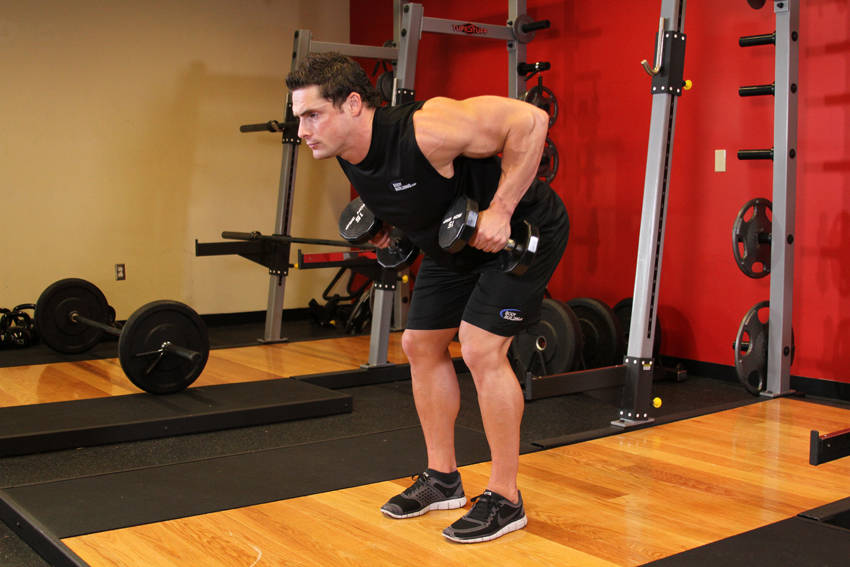

- With a dumbbell in each hand (palms facing your torso), bend your knees slightly and bring your torso forward by bending at the waist; as you bend make sure to keep your back straight until it is almost parallel to the floor. Tip: Make sure that you keep the head up. The weights should hang directly in front of you as your arms hang perpendicular to the floor and your torso. This is your starting position.
- While keeping the torso stationary, lift the dumbbells to your side (as you breathe out), keeping the elbows close to the body (do not exert any force with the forearm other than holding the weights). On the top contracted position, squeeze the back muscles and hold for a second.
- Slowly lower the weight again to the starting position as you inhale.
- Repeat for the recommended amount of repetitions.